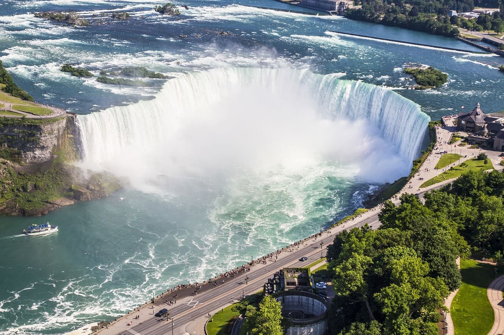

Explore Our Breathtaking Destinations
Ontario
Toronto
Toronto, is the most populous city in Ontario, is a vibrant and multicultural city located along the northern shore of Lake Ontario. Known for its impressive skyline dominated by the iconic CN Tower, Toronto offers a unique blend of culture, art, cuisine, and entertainment. From the historic Distillery District to the bustling St. Lawrence Market, there's something for everyone in this dynamic city. With its diverse neighborhoods, thriving arts scene, and culinary delights from around the world, Toronto invites visitors to immerse themselves in its rich tapestry of experiences.
Toronto is a vibrant and multicultural city located along the northern shore of Lake Ontario. Known for its impressive skyline dominated by the iconic CN Tower, Toronto offers a unique blend of culture, art, cuisine, and entertainment.
Niagara
Niagara, home to the famous Niagara Falls, is a landmark tourist destination in the Ontario region. The awe-inspiring Niagara Falls, with its spectacular natural beauty and powerful waterfall, captivates millions of visitors each year with its thundering cascades and mesmerizing mist. Beyond the falls, the region offers a myriad of experiences for travelers to indulge in. Embark on scenic boat tours that venture close to the base of the falls, or explore charming vineyards and sample exquisite wines along the Niagara Wine Route. Nature enthusiasts can immerse themselves in the region's lush natural parks, offering opportunities for hiking, picnicking, and wildlife spotting amidst serene landscapes. Whether you seek adventure, relaxation, or simply a closer connection with nature, Niagara promises an unforgettable journey filled with wonder and discovery.
Niagara, home to the famous Niagara Falls, is a landmark tourist destination in the Ontario region. The awe-inspiring Niagara Falls, with its spectacular natural beauty and powerful waterfall, captivates millions of visitors each year with its thundering cascades and mesmerizing mist.
Blue Mountain
Blue Mountain is a picturesque community nestled in the Blue Ridge Mountains of Ontario. Known for its premier ski resort and stunning natural landscapes, Blue Mountain is a popular year-round destination. From thrilling winter sports to summer outdoor activities like hiking, biking, and golfing, there's a wide range of experiences to enjoy in this charming region.
Blue Mountain is a picturesque community nestled in the Blue Ridge Mountains of Ontario. Known for its premier ski resort and stunning natural landscapes, Blue Mountain is a popular year-round destination.
Alberta
Banff
Banff is a charming resort town located in the heart of the Canadian Rockies in the province of Alberta. With its breathtaking natural surroundings, including majestic mountains, crystal-clear lakes, and lush forests, Banff is a paradise for nature lovers and outdoor enthusiasts. In addition to its scenic beauty, the town offers a variety of shops, restaurants, and high-quality accommodation options. Banff is also the gateway to Banff National Park, Canada's oldest national park and a UNESCO World Heritage Site, offering a wealth of outdoor recreational opportunities.
Banff is a charming resort town located in the heart of the Canadian Rockies in the province of Alberta. With its breathtaking natural surroundings, including majestic mountains, crystal-clear lakes, and lush forests, Banff is a paradise for nature lovers and outdoor enthusiasts.
Calgary
Calgary, situated amidst Alberta's majestic Rocky Mountains, pulsates with energy, blending its rich western legacy with modern urban vitality. The annual Calgary Stampede, a global spectacle of rodeo prowess and festivity, encapsulates the city's enduring spirit. Yet, Calgary's allure extends far beyond its cowboy heritage. Embracing cultural diversity, it boasts a flourishing arts scene, a cornucopia of culinary delights, and an abundance of outdoor adventures. From scaling the heights of the iconic Calgary Tower to immersing oneself in history at the Glenbow Museum, Calgary offers an unforgettable experience for every visitor.
Calgary, situated amidst Alberta's majestic Rocky Mountains, pulsates with energy, blending its rich western legacy with modern urban vitality. The annual Calgary Stampede, a global spectacle of rodeo prowess and festivity, encapsulates the city's enduring spirit.
Canmore
Canmore, a quaint enclave ensconced in the serene embrace of the Bow Valley, lies in proximity to the majestic Banff National Park. Embraced by awe-inspiring mountain vistas, Canmore beckons outdoor aficionados with a plethora of exhilarating activities. From invigorating hikes amidst pristine wilderness to adrenaline-pumping mountain biking trails, and from challenging rock climbing escapades to exhilarating ski slopes, Canmore caters to adventurers of all stripes. Moreover, the town's enchanting downtown exudes a cozy charm, adorned with boutique shops showcasing local craftsmanship, art galleries exhibiting regional talent, and inviting cafes offering a respite for weary explorers.
Canmore, a quaint enclave ensconced in the serene embrace of the Bow Valley, lies in proximity to the majestic Banff National Park. Embraced by awe-inspiring mountain vistas, Canmore beckons outdoor aficionados with a plethora of exhilarating activities.
Eastern Canada
Montreal
Montreal is a vibrant and cosmopolitan city located in the province of Quebec. Known for its rich history, diverse culture, and lively arts scene, Montreal offers visitors a unique blend of old-world charm and modern sophistication. Explore historic neighborhoods like Old Montreal, with its cobblestone streets and charming cafes, or indulge in the city's world-class dining scene, which includes everything from classic French cuisine to innovative international fare. Don't miss iconic attractions like Notre-Dame Basilica, Mount Royal Park, and the Montreal Museum of Fine Arts.
Montreal is a vibrant and cosmopolitan city located in the province of Quebec. Known for its rich history, diverse culture, and lively arts scene, Montreal offers visitors a unique blend of old-world charm and modern sophistication.
Quebec City
Quebec City, steeped in history and brimming with charm, stands as a testament to the rich tapestry of Canadian heritage. Its timeless architecture, adorned with intricate details and adorned with vibrant colors, captures the essence of a bygone era. Wander through the cobblestone streets of Old Town, where each step unveils centuries of stories etched into the very fabric of the city. Marvel at the grandeur of the iconic Château Frontenac, perched majestically overlooking the St. Lawrence River, and immerse yourself in the serenity of Place Royale, the historic heart of Quebec City. With its blend of old-world allure and modern vitality, Quebec City promises an unforgettable journey through time and culture.
Quebec City, steeped in history and brimming with charm, stands as a testament to the rich tapestry of Canadian heritage. Its timeless architecture, adorned with intricate details and adorned with vibrant colors, captures the essence of a bygone era.
Halifax
Halifax is the capital city of the province of Nova Scotia and a vibrant cultural hub on Canada's east coast. With its historic waterfront, lively arts scene, and stunning coastal landscapes, Halifax offers visitors a wealth of attractions and activities. Explore the waterfront boardwalk, where you'll find shops, restaurants, and historic sites like the Maritime Museum of the Atlantic and the Canadian Museum of Immigration at Pier 21. Discover the city's rich maritime heritage, relax on beautiful beaches, and sample fresh seafood at local eateries.
Halifax is the capital city of the province of Nova Scotia and a vibrant cultural hub on Canada's east coast. With its historic waterfront, lively arts scene, and stunning coastal landscapes, Halifax offers visitors a wealth of attractions and activities.